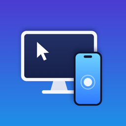

Политика конфиденциальности
Pocket for Mac для iPhone и Pocket for Mac Helper для Mac. Редакция от 18 ноября 2026 года.
Коротко
Приложения не собирают и не передают разработчику никаких данных. У них нет серверов, аккаунтов, аналитики, рекламы и трекеров. Всё, что вы делаете, идёт напрямую между вашим iPhone и вашим Mac.
Связь
iPhone находит Mac в локальной сети и подключается к нему по TLS 1.3 со взаимной проверкой сертификатов. iPhone привязывается к Mac по QR-коду с подтверждением на самом Mac; команды от непривязанных устройств Mac не принимает. Через интернет приложения не работают.
Что хранится на ваших устройствах
iPhone: список привязанных Mac и ключи для связи с ними (в Связке ключей), настройки, ваши автоматизации, файлы, полученные с Mac. Пароль Mac — только если вы сами сохранили его для разблокировки; он лежит в Связке ключей и открывается по Face ID.
Mac: ключ Mac и список доверенных iPhone (в системной папке помощника), настройки помощника, файлы, присланные с iPhone (в папке «Загрузки»).
Эти данные не покидают ваших устройств, кроме того, что вы сами передаёте между iPhone и Mac: текст и файлы, буфер обмена, изображение экрана Mac.
Разрешения
iPhone: камера — только чтобы отсканировать QR-код привязки; локальная сеть — чтобы найти Mac и подключиться к нему; Face ID — чтобы открыть сохранённый пароль Mac.
Mac: «Универсальный доступ» — курсор, клавиши и окна по командам с iPhone; «Запись экрана» — показ экрана Mac на iPhone; доступ к папкам — показ и передача файлов; «Автоматизация» — перезагрузка и выключение по команде и сведения о том, что сейчас играет. Каждое разрешение macOS спрашивает при первом использовании функции.
Удаление
Удалите приложение с iPhone — вместе с ним удаляются его данные. На Mac: настройки помощника → «Основные» → «Удалить Pocket for Mac Helper…» удаляет службу, ключ Mac, список iPhone и настройки. Полученные файлы остаются в «Загрузках».
Связь с разработчиком
Вопросы о конфиденциальности — в разделе Issues проекта. Если политика изменится, новая редакция появится на этой странице.